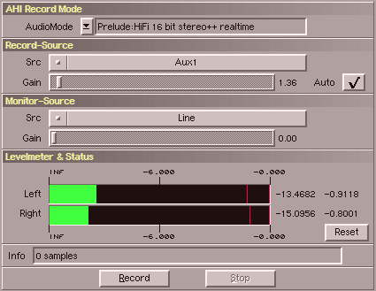

SoundFX naturally offers functionality for recording own sounds
from external sources (e.g. microphone). SoundFX uses AHI for recording.
If you want to record audio directly from a CD then please have a look at the
CDDA-Loader.
This window offers the following functions :
| gadget | description |
|---|
| AHI Record Mode | choose an audio-mode for recording. |
| Record Source | a list of available recording sources. |
| Record Gain | for adjusting the record gain. |
| Record Auto | This is a special feature of SoundFX.
Move the gain to full right and activate 'Auto'.
Now SoundFX will lower the gain continously,
until it does not clip anymore. |
| Monitor Source | a list of monitor-outputs . |
| Monitor Gain | for adjusting the monitor volume. |
| Level Meter | These level-meters show the volume of the input signal.
The red bars mark the maximum value. The values to the
right of the meters show the current input and maximum. |
| Status | Shows how much data already has been recorded. |
| Reset | for resetting the maximum-display. |
A click on "Record" obviously starts recording, where a click on "Stop" ends it.
When SoundFX records audio the level-meters are inactive to save processing power.
Please note, that AHI currently always records in stereo 16 bit .
Future version might record in mono as well. For SoundFX there is currently no easy workaround available,
other than using the convert-channels operator afterwards.
Another problem is, that some of you may not be able to use the gain-sliders. The reason for it is that
the recording-hardware and/or the AHI-driver does not support this.
|